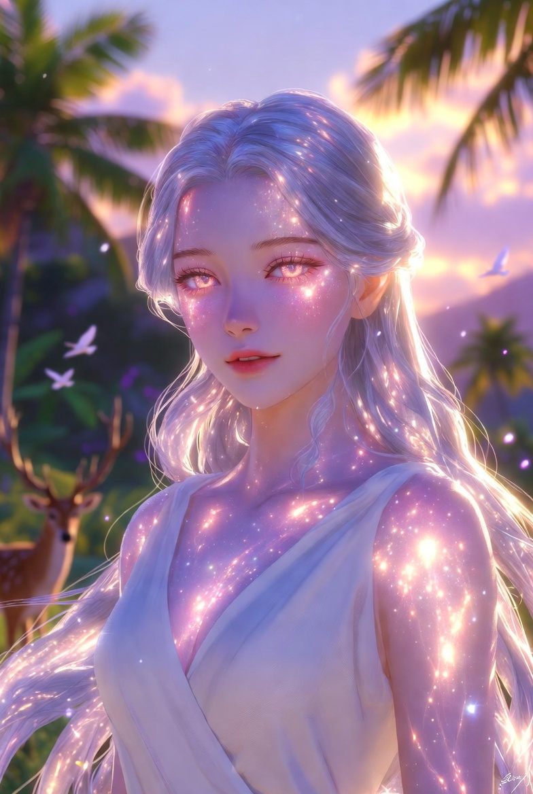

Принцесса Лирана Аэлира, воплощение Изначальной, Хранительница Королевского Бестиария
Изначальная
- Возраст
- 24–26 лет; После открытия Врат — 34–36 лет
- Пол
- Женский
- Рост
- около 172 см
- Специальность
- Воплощение Изначальной — богини гармонии природы и равновесия между мирами. Хранительница всех живых существ, покровительница заповедников «Оазис», соуправительница тройственного союза. Королевская покровительница сети заповедников и программы восстановления редких видов. Одна из трёх супруг тройственного союза с Рури.
Внешность (кратко)
В обычной «принцесской» форме — необычайно красивая молодая женщина с полупрозрачной кожей, которая мягко светится изнутри мягким перламутровым светом. Длинные серебристые волосы, похожие на текучую воду или лунный свет. Глаза переливаются всеми оттенками рассвета — от нежно-розового до золотого. Одевается просто и практично: туники песочного или белого цвета, удобные сапоги. В истинном облике Изначальной превращается в сияющее существо, сочетающее черты множества животных в идеальной гармонии: грация ирбиса, крылья, рога, перья, чешуя и мягкая шерсть одновременно, всё окутано мягким белоснежным и радужным сиянием.
Предыстория
Древняя богиня гармонии и равновесия, которая каждые семь столетий выбирает смертного супруга для обновления сил природы. Род Лунной Росы (Арианна) издревле служил её жрицами. Лирана долго наблюдала за миром в облике принцессы Аэлира, хранительницы Королевского Бестиария. После рассказов Арианны о Рури поняла, что именно он — тот, кого она искала. Участвовала в ритуале открытия Хрустальных Врат, а позже вошла в тройственный союз с Рури и Арианной. Её благословение даровало Рури новые силы и официально возвело его в статус Великого Магистра и Хранителя Границ Между Мирами.
Характер
Мудрая, спокойная и невероятно добрая. Говорит мало, но каждое слово наполнено глубиной и теплом. Обладает материнской заботой ко всем живым существам. Спокойна даже в моменты великих потрясений, обладает чувством лёгкого юмора и игривости в кругу близких. Очень нежна с Рури и Арианной. Ценит искренность, гармонию и свободу. Не любит формальности и излишнюю роскошь, предпочитая простоту и близость к природе.
Особая способность
Полное воплощение божественной силы гармонии природы. Может принимать любой облик живых существ или сочетать их черты. Способна исцелять, обновлять и восстанавливать баланс любой экосистемы. Дарует благословения, усиливающие связь с животными (как у Рури). Проводит ритуалы обновления мира, стабилизирует границы между измерениями и помогает существам из разных миров адаптироваться. В присутствии Лираны любые конфликты между живыми существами быстро затихают, а раненые или испуганные создания обретают покой. Её сила особенно сильно проявляется в заповедниках «Оазис», где она выступает живым сердцем всей сети.
Positive Prompt (для генерации):
---
Negative prompt (для генерации:)
---
Flux Positive Prompt (для генерации):
---
Flux Negative Prompt (для генерации):
---